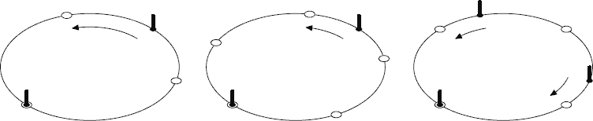

Home Page
F.A.Qs
Statistical Charts
Past Contests
Scheduled Contests
Award Contest
| Online Judge | Problem Set | Authors | Online Contests | User | ||||||
|---|---|---|---|---|---|---|---|---|---|---|
| Web Board Home Page F.A.Qs Statistical Charts | Current Contest Past Contests Scheduled Contests Award Contest | |||||||||
|
Language: Graveyard
Description Programming contests became so popular in the year 2397 that the governor of New Earck — the largest human-inhabited planet of the galaxy — opened a special Alley of Contestant Memories (ACM) at the local graveyard. The ACM encircles a green park, and holds the holographic statues of famous contestants placed equidistantly along the park perimeter. The alley has to be renewed from time to time when a new group of memorials arrives. When new memorials are added, the exact place for each can be selected arbitrarily along the ACM, but the equidistant disposition must be maintained by moving some of the old statues along the alley. Surprisingly, humans are still quite superstitious in 24th century: the graveyard keepers believe the holograms are holding dead people souls, and thus always try to renew the ACM with minimal possible movements of existing statues (besides, the holographic equipment is very heavy). Statues are moved along the park perimeter. Your work is to find a renewal plan which minimizes the sum of travel distances of all statues. Installation of a new hologram adds no distance penalty, so choose the places for newcomers wisely! Input Input file contains two integer numbers: n — the number of holographic statues initially located at the ACM, and m — the number of statues to be added (2 ≤ n ≤ 1000, 1 ≤ m ≤ 1000). The length of the alley along the park perimeter is exactly 10 000 feet. Output Write a single real number to the output file — the minimal sum of travel distances of all statues (in feet). The answer must be precise to at least 4 digits after decimal point. Sample Input sample input #1 2 1 sample input #2 2 3 sample input #3 3 1 sample input #4 10 10 Sample Output sample output #1 1666.6667 sample output #2 1000.0 sample output #3 1666.6667 sample output #4 0.0 Hint  Pictures show the first three examples. Marked circles denote original statues, empty circles denote new equidistant places, arrows denote movement plans for existing statues. Source | ||||||||||
[Submit] [Go Back] [Status] [Discuss]
All Rights Reserved 2003-2013 Ying Fuchen,Xu Pengcheng,Xie Di
Any problem, Please Contact Administrator